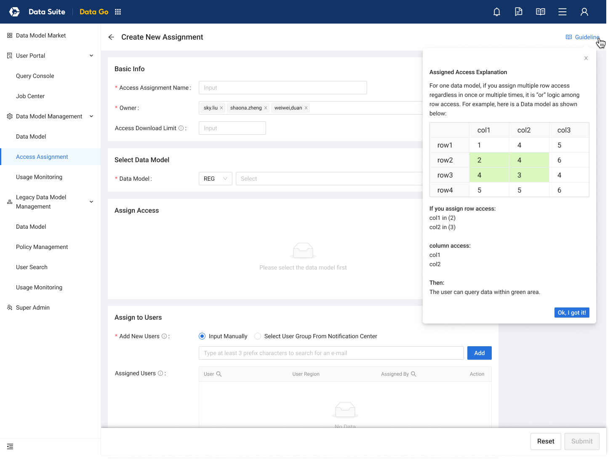
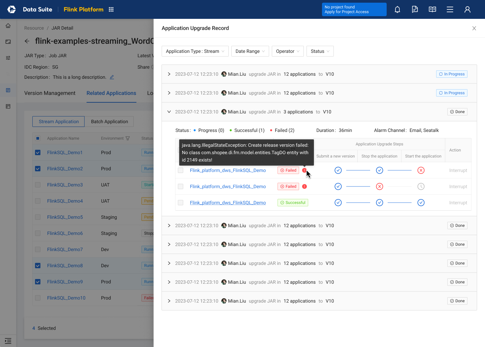
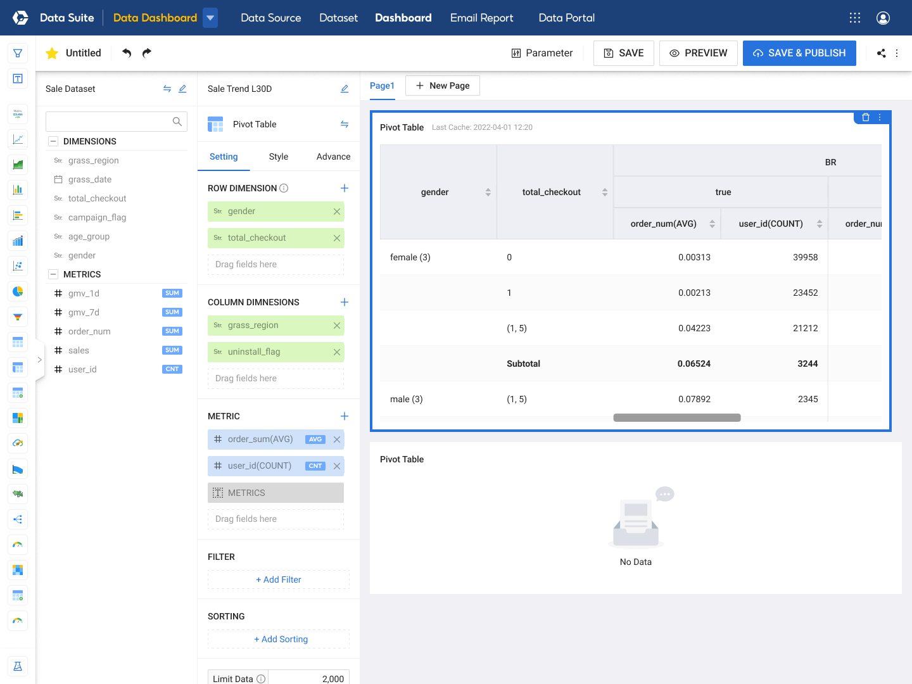
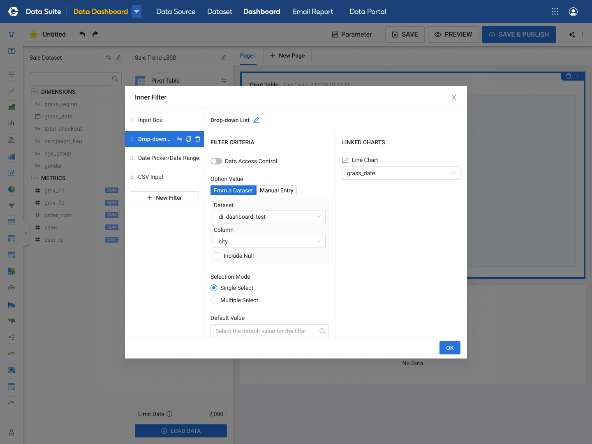
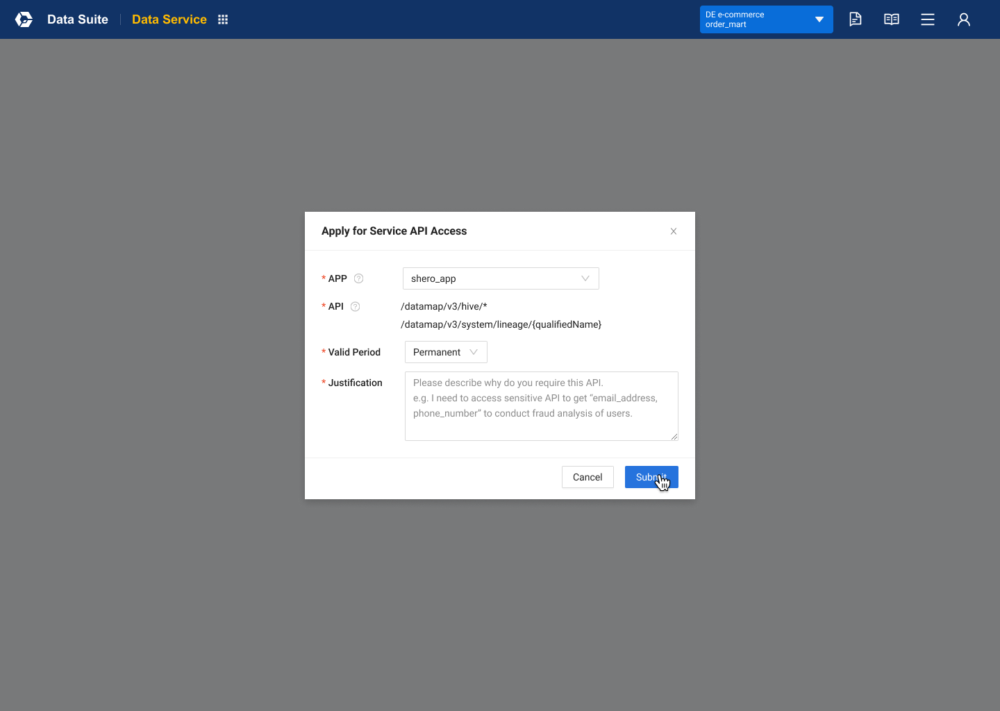

01 / DataGo · 角色与任务
先分清谁在用数据，谁在维护模型。
原有结构把模型发现、模型编辑、保存查询和多类权限混在一起。消费者会看到不可用的编辑入口，查询也藏在与任务无关的位置。我的切入点是重整角色和任务，再调整导航与页面。
一个取数任务 · 从发现模型到组织查询
各图可放大查看完整原稿。
- 消费者
- 在 Model Market 找到模型，通过 Query Console 配置查询，再到 Job Center 查看任务。
- 维护者
- 在 Data Model、Access Assignment 与 Usage Monitoring 中管理模型、授权和使用。
继续看：新旧共存时，把投入范围说清楚
原稿明确 System Model 将逐步退出，除修复问题外不再继续迭代。保留独立的 Legacy 入口，让新体系和旧模型在过渡期间各有位置，没有把所有历史模块都重做一遍。
02 / DataGo · 作用范围
“有权看什么”和“这次查什么”，是两件事。
消费者需要知道自己对当前模型有什么权限；维护者需要理解一次分配最终开放了哪些数据。我的设计把列权限与行条件放回模型内呈现，再用可见的区域说明组合后的访问范围。
DataGo v2.0 · 授权说明终稿

不同历史模型的授权逻辑并不相同。体验统一需要先理解规则，在新旧共存时准确表达边界，而不能把表面相似的控件直接合并。
03 / Flink · 依赖与执行
一次批量操作，也要看清每个对象的结果。
一个 JAR 包可能被多个应用使用。升级不只是切换版本，还涉及提交、停止和启动。我将关联应用、可操作状态和升级步骤放在同一任务里，批量配置的同时保留每个应用的结果。
同一种依赖关系 · 操作结果与编排视角对照
看清逐项执行结果
批量操作结束，仍要区分每个应用、每个步骤的成败。
Flink v2.4 / v2.4.1 · 升级记录原稿

升级记录来自 v2.4 / v2.4.1，编排画布来自 v2.5；两个版本从操作结果与关系结构两个角度，解释依赖与执行。
失败后停止后续步骤，但不回滚已完成步骤。这是操作的真实边界，需要让用户看懂，不能用一个总成功率或总状态代替逐项结果。
继续看：为什么需要编排画布
v2.5 中，Pipeline 从生成 JAR 扩展到操作应用和模板。我用画布呈现产物、关联应用、环境分支与操作，让人检查依赖，再选择保存、监听或立即触发。
画布承载的是关系与约束。配置错误应指向具体节点，保存配置与触发执行也有不同后果；这些判断比“使用 Canvas”本身更重要。
04 / Dashboard 编辑
数据、配置与画布，需要一起被理解。
Dashboard · 先组织分析，再明确筛选范围
编辑工作区：看懂图表怎样组成
数据字段与配置紧邻画布，随时检查组合后的结果。
Dashboard Revamp · 编辑工作区

筛选配置：检查它影响哪里
选择条件，同时明确 Linked Charts 中的图表与字段。
Dashboard Revamp · Inner Filter

同一产品中的两个视角：整体编辑关系与局部作用范围。
我梳理编辑器的工具、数据、配置与画布，再处理筛选配置与 Linked Charts 的对应。筛选出现在哪里，与它实际影响哪些图表，需要分别表达。
05 / API 使用与访问
先读懂接口，再明确申请的访问范围。
Data Service · 接口说明与访问申请
申请访问：限定调用方与接口
将访问意图落实为可核对的对象、时间与理由。
Data Service v1.10 · 访问申请原稿

Data Service v1.10 原稿。左侧保留整体信息结构，右侧聚焦申请表单；两张完整原图均可放大。
接口的用途、请求与响应帮助使用者理解调用要求；访问申请则明确到调用 APP、所选 APIs、有效期与理由。接口访问、流量限制和策略编辑分别承担不同控制。
06 / 平台取舍与持续支持
在成熟体系里改善关键任务，再让团队接续支持。
我在逐步交接 Space、完善设计系统的同时支持 DataSuite。这里已有完整产品和界面，优先工作是理解数据业务及现有规则，从关键任务入手改善体验。跨团队协作、历史技术栈与研发资源限定了可改变的范围，因此按具体问题推进，未做全平台迁移。
从关键产品设计中建立数据业务的全局认知后，我带领设计师形成稳定支持，沉淀业务理解、设计依据与协作方式，再交给后续 PIC 和设计师接续。与 Space 相通的是进入领域和建立支持的方法；不同的是成熟产品的起点，以及可调整的范围。
- 角色与信息结构
- DataGo 重组消费者与维护者入口，区分查询任务、模型管理与访问范围，并为旧模型保留过渡位置。
- 复杂操作与反馈
- Flink 组织批量升级和逐项执行结果，呈现产物、应用与环境依赖；Dashboard 与 Data Service 补充配置及访问关系。
- 可持续的设计支持
- 把项目中形成的业务认知、设计依据和协作基础交给后续 PIC 与设计师，支持继续改进成熟产品。
这些成果体现为具体方案、交互结构与设计支持。平台仍存在技术和体验差异，没有全面统一，也没有全量采用 Infra Design System。
部分界面细节涉及企业内部信息，可在面试交流中结合 Figma 源文件展开介绍。